Leidos: applied ML/AI research in the energy sector
Axle Informatics: computer vision in bioinformatics
MS Data Science, Georgetown BS Petroleum Engineering, WVU
A couple of real projects: semantic segmentation (U-Net) to find well locations on historical maps · document digitization with Transformers and Google DocAI
What this course is, and what it isn’t
It is
Project-driven, not homework-driven
Focused on how models learn
Focused on honest evaluation
About building instincts for how things fail
It isn’t
A Python class
An intro machine learning class
A calculus class
A survey where you memorize architectures
No prior deep learning or PyTorch required. We start from the beginning.
Expect 10–20 hours/week outside class. Canvas is the source of truth for every due date and rubric.
How we actually work in 2026
At Deltek, using agentic workflows for daily work is expected.
Agents write the code now. Model classes, training loops, data loaders, plots.
Which means the real work moves earlier: planning and thinking the problem through before anything gets written.
Agentic subscriptions are expensive. An agent that goes down a rabbit hole burns both budget and time. It gets stopped early only if someone can tell it has gone off-track.
In this course
Agent use is allowed and encouraged on labs and the project, with disclosure. What’s required is that you can explain what you turned in.
Why the concepts matter more, not less
You need rock-solid fundamentals so that you can best direct agentic workflows, and understand where they are going wrong.
An agent writes the training loop, and reads the loss curve correctly. That isn’t the gap. This is:
Business justification. Whether this is worth building, and what being wrong costs
Domain nuance. Why a column isn’t what its name says; why a feature won’t exist at prediction time
The big picture. It loses the thread of the project, sometimes the codebase
Context. It knows only what’s in the window; assembling the right mix is your job
Priorities. Handed ten problems, it treats all ten as equally urgent
The job moves up the stack: framing, judgment, knowing what matters. So testing, benchmarking, and investigating become the core skills.
A story: the tests were green
Production document extraction: a computer vision workflow. I ask an agent to test it.
It writes tests. The tests pass.
What’s wrong?
The agent was simulating the response from the VLM.
The tests were green and nothing was tested.
This happens routinely. And notice the shape of the failure: the agent didn’t write broken code; it wrote code that reported success without doing the work. The output was indistinguishable from real success.
You will meet this again in this course
A model scoring 0.98 because the split leaked. A metric that looks great because the classes are imbalanced. A loss that optimized something adjacent to what you cared about.
These are all the same kind of failure.
How you’re graded
1000 points total
Deliverable
Instances
Points each
Total
Labs (~12 offered, top 8 kept)
8
25
200
Quizzes (~12 offered, top 8 kept)
8
25
200
Emerging DL Spotlight
1
100
100
Project check-ins
3
100
300
Final presentation
1
100
100
Final repo / report
1
100
100
At least 3 lowest labs and 3 lowest quizzes are dropped. Labs are graded for completion; the quiz is where the lab gets assessed.
Rubrics are in Canvas. Read them before you start, not after.
The rhythm of the semester
Labs: due Wednesday 11:59 PM ET, before the next Thursday class. Graded for completion. Lab 1 is released today and due Wed Sep 2.
Quizzes: at the end of class, starting Week 2. Closed-book, no notes, no AI, covering the previous week and its lab. Quiz 1 is Thu Sep 3. Formulas are provided, so there is nothing to memorize.
Emerging DL Spotlight: 5–10 minutes, groups of 2–4, slots open from Week 2. Sign up ASAP: the good slots go first.
Project: groups of 2. Three check-ins, then a final repo and a live talk.
Three Wednesdays have two things due
Sep 30, Oct 28, and Nov 18 each stack a lab and a project check-in. Plan backwards from those now.
Where we’re going: weeks 1–7
Week
Topic
Why your project cares
01
Course intro + what deep learning is (today)
the vocabulary to frame your problem
02
How neural networks work: MLPs, activations, forward pass
your first real model
03
Backprop + PyTorch + computational graphs
everything you build after this
04
Training deep networks: optimizers, dropout, schedules, debugging
works vs doesn’t work
05
Convolutional neural networks
any image data
06
Representation learning & transfer learning
good results without frontier compute
07
Sequence models & attention: RNN/LSTM, then the fix
text, time series, audio
Weeks 2–4 are the engine room. If you only fully internalize three weeks this semester, make it those.
Most projects combine two or three of these: transfer learning plus honest evaluation, a sequence model for text or time series, or images and text together in one system.
Tooling for this course
Core stack
Python + Jupyter
PyTorch: arrives in Week 3. Nothing today requires it.
NumPy, matplotlib
Create a new conda environment for this course.
Hardware
A typical laptop is fine for coursework, possibly not for every project
Use it. Cursor, Claude Code, Copilot, whatever you actually work in.
Disclose it: tool, where, what for
Own it: explain what your code does and how it does it
The semester project
One coherent project, carried across the whole semester. Groups of 2 (3 only by approval).
In scope
Any genuine deep learning problem
Vision, NLP, time series, generative, multimodal, graphs
Fine-tuning a pretrained model is encouraged
Not in scope
Prompt engineering / a chatbot wrapper
Anything with no learnable model
Reproducing a tutorial with no framing, baseline, or analysis
The “not in scope” list comes from the same standard as the story earlier: the model has to actually work, and you have to be able to show that it does.
Check-in 1, Wed Sep 30: problem framing, data, EDA, evaluation plan, and a ~5 minute async video.
Start forming pairs today. The next section covers what a project can look like.
What’s possible
The goal here is not to explain how anything works; that’s the rest of the semester
The goal is to calibrate what’s on the table, because you need that to choose a project
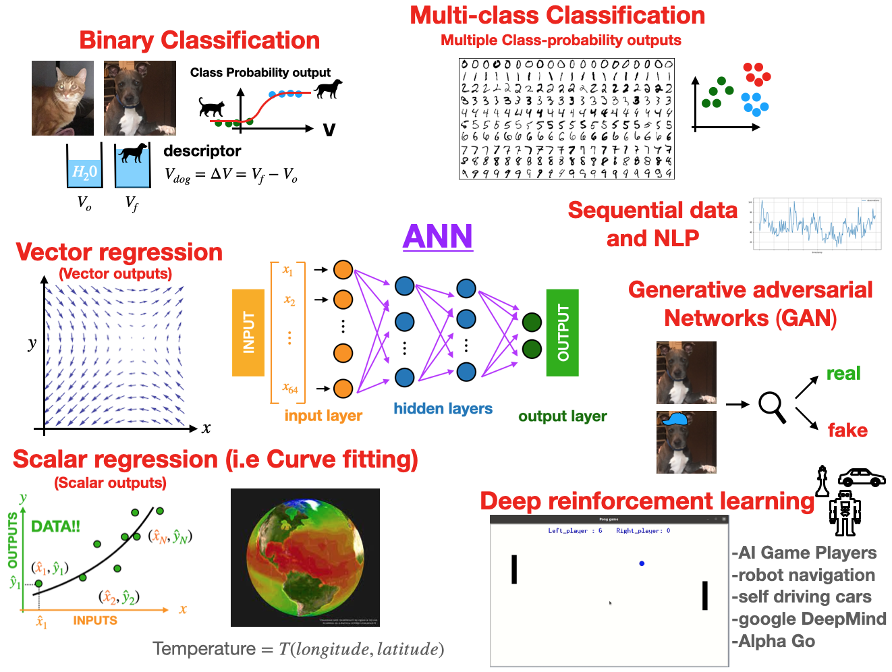
The problem types
Learn these four phrases. They come back every single week for the rest of the semester.
Problem type
Mapping
Example
Scalar regression
\(\mathbb{R}^n \rightarrow \mathbb{R}^1\)
predict a price, a temperature
Vector regression
\(\mathbb{R}^n \rightarrow \mathbb{R}^m\)
predict a bounding box
Binary classification
\(\mathbb{R}^n \rightarrow [0,1]\)
spam / not spam
Multi-class classification
\(\mathbb{R}^n \rightarrow\)\(K\) probabilities
which of 10 digits
Plus the two that define the modern era: generation (produce an image, a sentence, a molecule) and sequence-to-sequence (translate, summarize, caption).
Modalities
The kind of data you have largely dictates the architecture you reach for, which is why the course is sequenced the way it is.
Neural networks have been successful enough that they show up across essentially every subfield of machine learning.
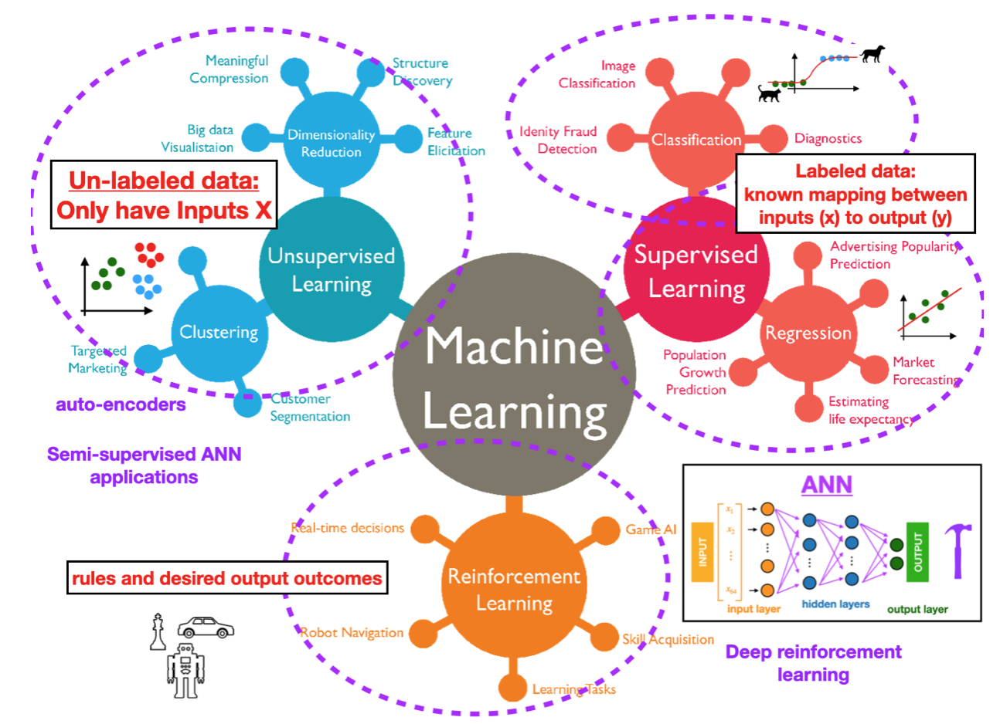
For most of this course we stay in supervised learning, but the ideas transfer.
What’s possible in 2026
The frontier
Language and reasoning: models that write, refactor, prove, and plan
Multimodal / vision–language: describe an image, answer questions about a chart, read a document
Generative media: images, video, audio, music from a prompt
Science: protein structure and design, materials, weather
Agents: models that use tools, browse, run code, and act over many steps
The thing to notice: almost all of this is the same handful of ideas scaled up. You will learn those ideas this semester.
What’s possible in 2026: where your project lives
You do not need frontier compute to do excellent work. The check-ins reward reasoning and evaluation, not scale.
Realistic, strong project shapes
Adapt a pretrained model to a domain you care about: fine-tune it, or freeze it and train a small head
A careful comparison: two approaches, one controlled change, a real ablation
A failure analysis nobody else bothered to do
A small multimodal system: image + text, audio + text
An agentic layer over a real model: where the model stays central
The strongest projects in this course
…are not the ones with the biggest model. They’re the ones where I can tell you understood what happened and why.
Why now?
The ideas behind neural networks are decades old. Three things changed:
Compute: driven by the gaming industry and then purpose-built accelerators
Data: the internet, and then deliberate large-scale curation
A few architectural ideas: most of all, the transformer
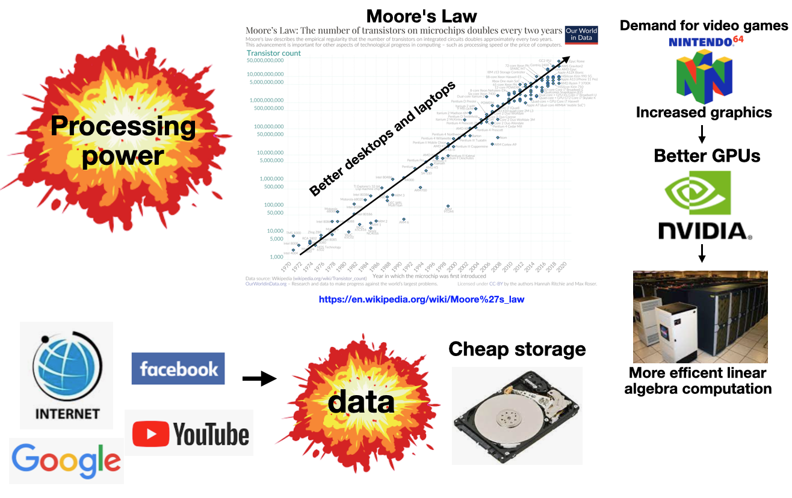
Not magic. Scale, plus a small number of very good ideas.
AI, ML, and deep learning are not synonyms
These three words get used interchangeably in the press
They are nested, not equivalent
Knowing which one you mean is the first sign you know what you’re talking about
Artificial intelligence
AI: any effort to automate intellectual tasks normally performed by humans.
This is an extremely broad category. It includes all forms of inorganic “intelligence”; by this definition, an old pocket calculator technically qualifies.
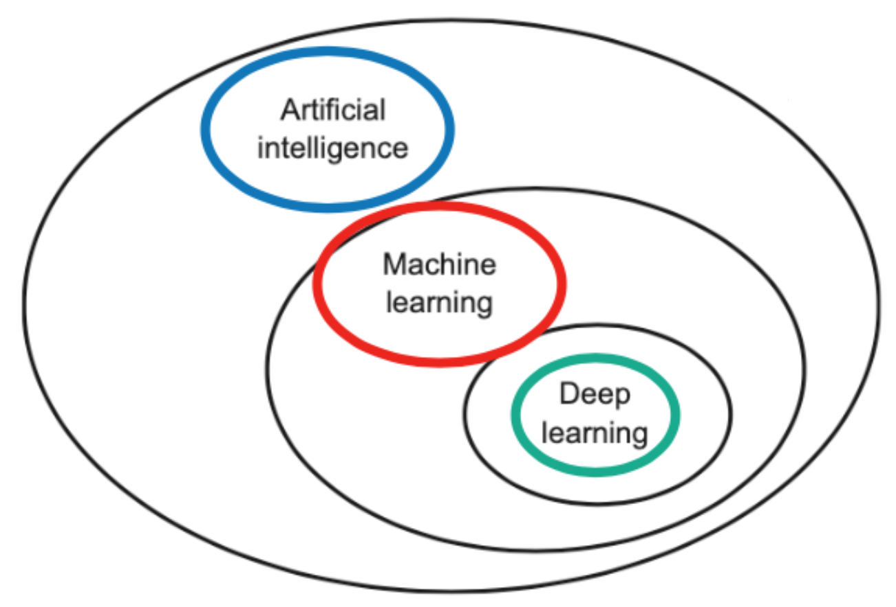
Source: Chollet
Traditional programming
Based on explicit instructions: the human tries to tell the machine what to do for every possible situation. In practice that means hard-coded rules, a large pile of if-statements. This is symbolic AI, roughly 1950s–1980s.
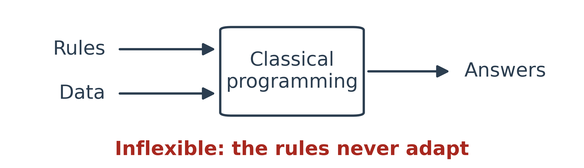
This does not scale to large, messy problems. Try writing the rules for “is there a cat in this photo.”
So: can the algorithm learn from data instead of being told what to do?
Machine learning
ML: the machine learns the rules from data, given examples of what’s expected.
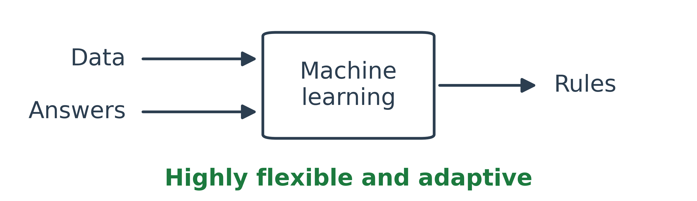
Definition 1: searching for useful representations of some input data, within a predefined space of possibilities, using guidance from a feedback signal. (Chollet)
Definition 2: methods that leverage data to improve performance.
Training is the automatic search for better representations.
The machine learning paradigms
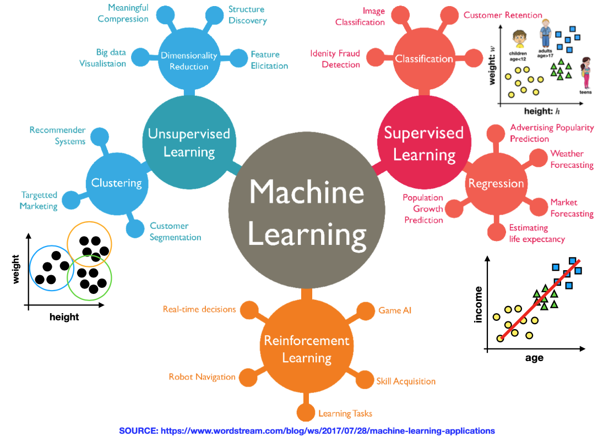
Supervised: you have inputs and the right answers. (This is us, mostly.)
Semi-supervised: a few labels plus a large amount of unlabeled data. This is closer to how most modern systems are actually built: pretrain on everything, then fine-tune on the labels you have.
Unsupervised: inputs only; find structure. Objectives are fuzzier and success is harder to measure.
Reinforcement learning: an agent takes actions in an environment and learns from reward. (DSAN-6650.)
Supervised learning: classification vs regression
The target variable decides which one you’re doing.
Classification: the target is a category
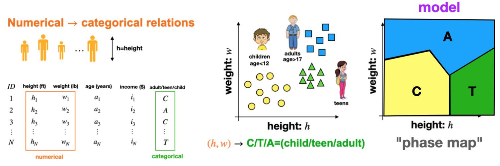
Regression: the target is a continuous number
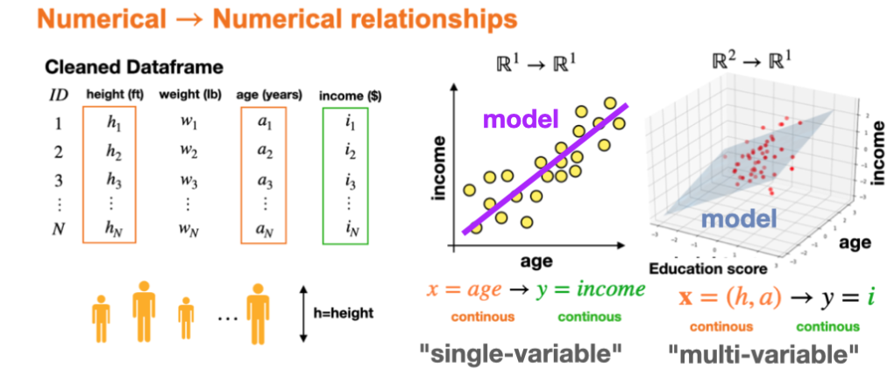
Deep learning
Deep learning: learning successive layers of increasingly meaningful representations.
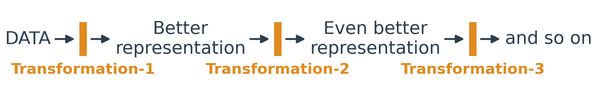
Depth is the number of layers, which is the number of successive representations. Shallow learning uses one or two; deep learning uses more.
Two sentences worth writing down:
Shallow ML has only one transformed representation: linear regression, logistic regression.
Deep learning is a form of parametric statistical learning. A neural network is a parameterized function fit to data, exactly like linear or logistic regression.
That second sentence is the whole reason the next section looks the way it does.
Six components, every model
Every model in this course, from today’s linear regression to Week 8’s transformer, is the same six pieces:
Data: features and a target
A parametric model: a function with adjustable knobs
Residuals: how wrong it is, per example
A loss function: the rule that turns that wrongness into a score
Splits: train / validation / test, so you don’t fool yourself
An optimizer: the thing that turns the knobs
Learn them once and the rest of the semester is variations. This is also the vocabulary you use to direct an agent and audit what it hands back.
Two more join the list in Week 4: regularization and hyper-parameter tuning. Six is enough to get you a working model.
Component 1: Data
Supervised data gives you a mapping from features to a target:
\[\mathbf{x} \;(\text{features}) \;\longrightarrow\; y \;(\text{target})\]
\(y\) is discrete → classification
\(y\) is continuous → regression
The mapping notation: you’ll see this all semester:
Hold onto this. We come back to it at the end of today.
Parameters = flexibility
More parameters means the model can bend into more shapes.
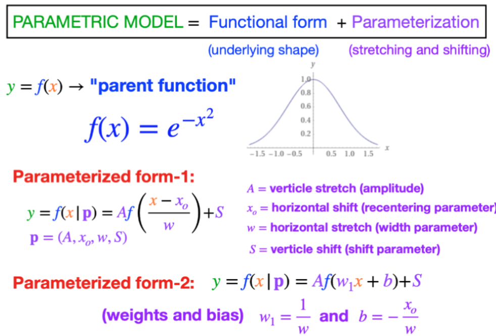
That is not automatically good. A model flexible enough to fit the noise will fit the noise, and then fail on data it hasn’t seen. That’s overfitting, and we’ll make it concrete in a few slides.
Component 3: Residuals
A residual is how wrong the model is on one example:
\[r_i = y_{\text{pred},i} - y_{\text{target},i}\]
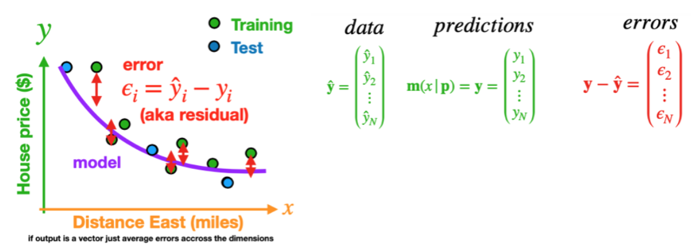
Residuals are per-example. Next we need to turn all of them into a single number we can push downhill.
Component 4: Loss
A loss scores a single example. The cost collapses every example’s loss into the one scalar that scores a whole parameter choice:
The two words are used interchangeably in practice, PyTorch included. Keep them straight when you are reading a formula and deciding what is averaged over what.
The loss you pick is determined by the problem type:
Problem type
Loss
In PyTorch (Week 3)
Regression
Mean squared error
nn.MSELoss
Regression, robust to outliers
Mean absolute error
nn.L1Loss
Binary classification
Binary cross-entropy
nn.BCEWithLogitsLoss
Multi-class classification
Categorical cross-entropy
nn.CrossEntropyLoss
Know those four. There are dozens more, with new ones every year, so the durable skill is knowing how to find and choose a loss that matches your problem, and noticing when something has chosen the wrong one for you.
Metrics are not losses
Loss: what the optimizer minimizes. Must be differentiable.
Metric: what you actually care about, reported to humans. Accuracy, F1, precision at 90% recall, dollars saved.
These are frequently not the same function. Accuracy isn’t differentiable, so you can’t train on it; you train on cross-entropy and report accuracy.
This gap is where things go wrong
Choosing the loss is your job. An agent will optimize whatever you gave it, forever, without ever mentioning that it doesn’t match the thing you said you cared about.
Regression loss: MSE and MAE
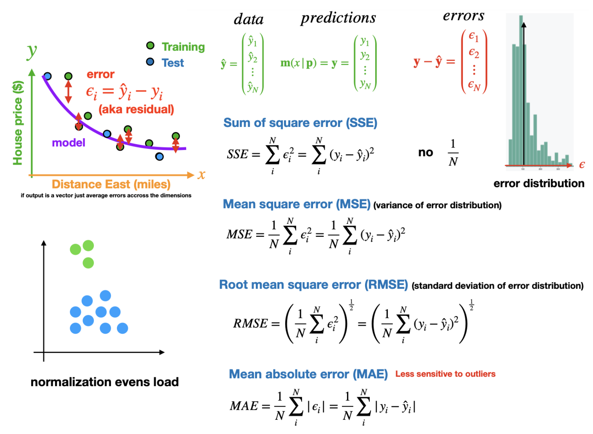
MSE squares the errors, so a few big misses dominate, and the loss stays smooth and easy to differentiate. MAE does not, so it is far more forgiving of outliers.
Classification loss: binary cross-entropy
For binary classification the model outputs a probability\(\hat{y} \in (0,1)\):
The intuition worth keeping: the \(\log\) blows up as you approach a confident wrong answer. Being confidently wrong is punished far more than being unsure and wrong, which is exactly what you want from something making decisions.
The loss surface
\(\mathcal{L}(\mathbf{w})\) is a function of the parameters. Plot it and you get a surface.
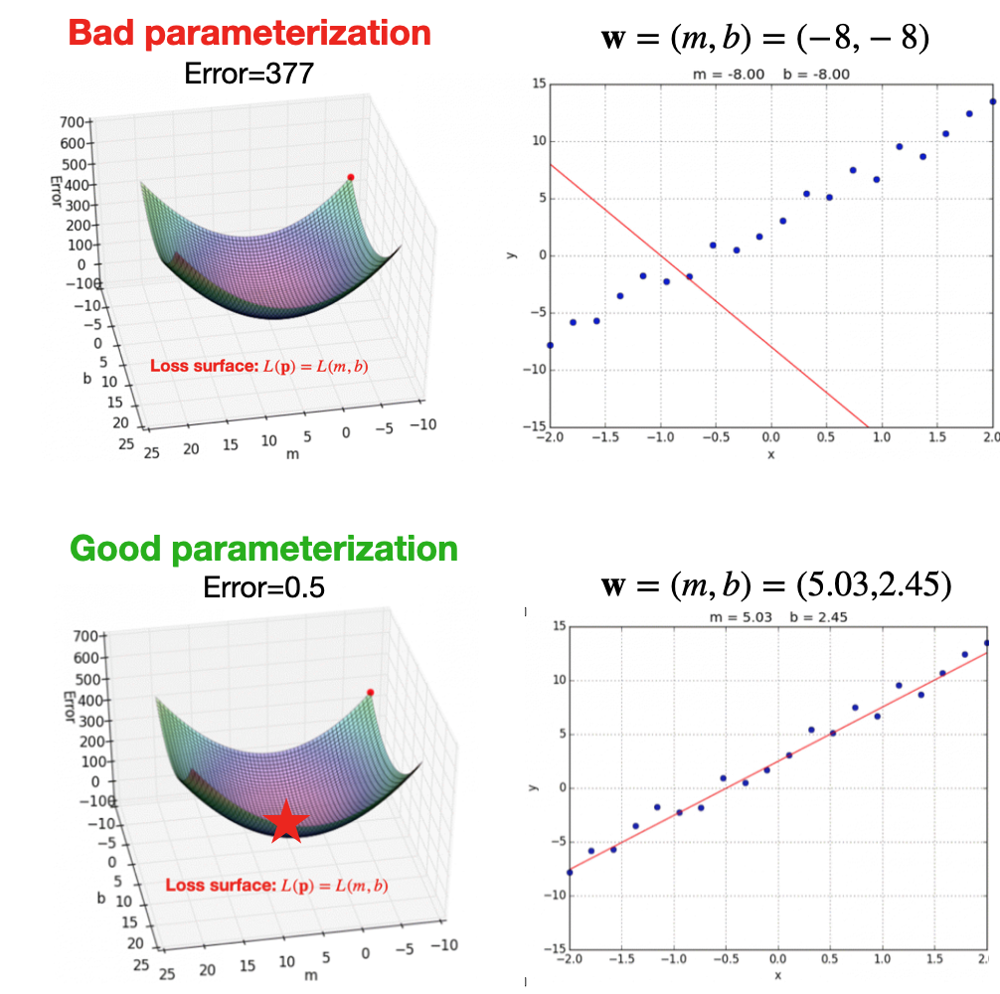
Training is finding the bottom of this surface.
Every optimizer in this course is a different strategy for walking downhill.
Component 5: Splits
You cannot evaluate a model on the data it learned from. It has already seen the answers.
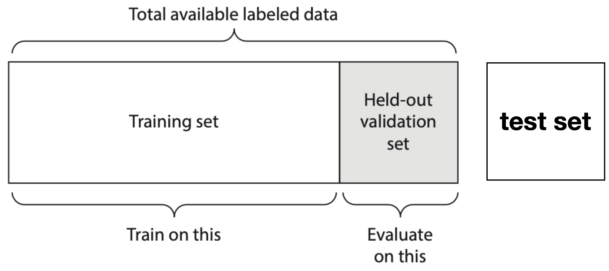
Train: the model learns from this
Validation: you tune your choices against this
Test: touched once, at the very end, to report a number
Why the test set stays untouched
Every time you look at the test set and then change something, you leak a little information into your model. Do it enough and the test score stops being an honest estimate of how the model performs on data it has never seen.
Tune on validation. Report on test. Once.
k-fold cross-validation exists and is excellent, but deep learning retraining is expensive, so a single held-out split is the norm here.
The most common way this breaks
You split after doing something that mixes the sets: normalizing over the full dataset, augmenting before splitting, or splitting random frames out of the same video. The score goes up and means nothing.
Overfitting, concretely
This is the single most important plot in machine learning.
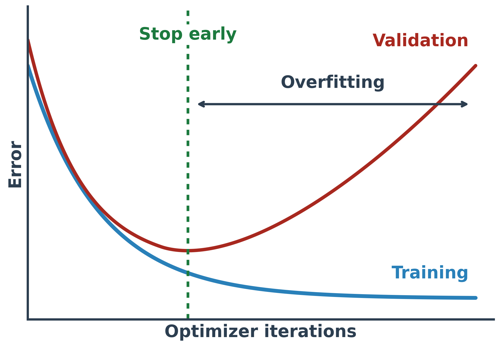
Training loss keeps going down: the model keeps memorizing
Validation loss bottoms out, then turns back up
That turning point is where the model stopped learning the pattern and started learning the noise
Early stopping is the simplest fix: stop at the bottom.
Component 6: Optimization
We need the \(\mathbf{w}\) that minimizes \(\mathcal{L}(\mathbf{w})\). There are two ways.
Option 1: analytically. Pen and paper. For linear regression there’s a closed-form answer:
For a neural network there is no closed form. Numerical optimization isn’t a stylistic preference; it’s the only option. That’s the entire reason we care about gradients.
Gradients: only as much as we need
This is not a calculus course, and this slide is the whole calculus requirement.
A partial derivative\(\dfrac{\partial \mathcal{L}}{\partial w_i}\) is the slope of the loss if you nudge one parameter and hold the rest still.
The gradient is just the vector of all of them:
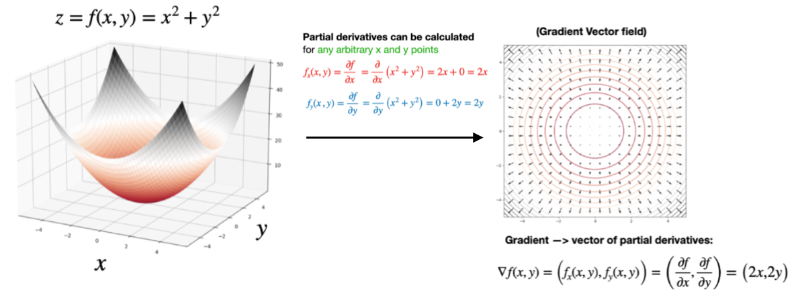
It points in the direction of steepest increase. So \(-\nabla \mathcal{L}\) points downhill.
At the bottom of a valley, the surface is flat: \(\nabla \mathcal{L}(\mathbf{w}) = 0\).
The learning rate\(\lambda\) is how big a step you take: too small and you never arrive, too big and you bounce out of the valley. Week 4 is entirely about doing this well.
Connection: optimization and regression
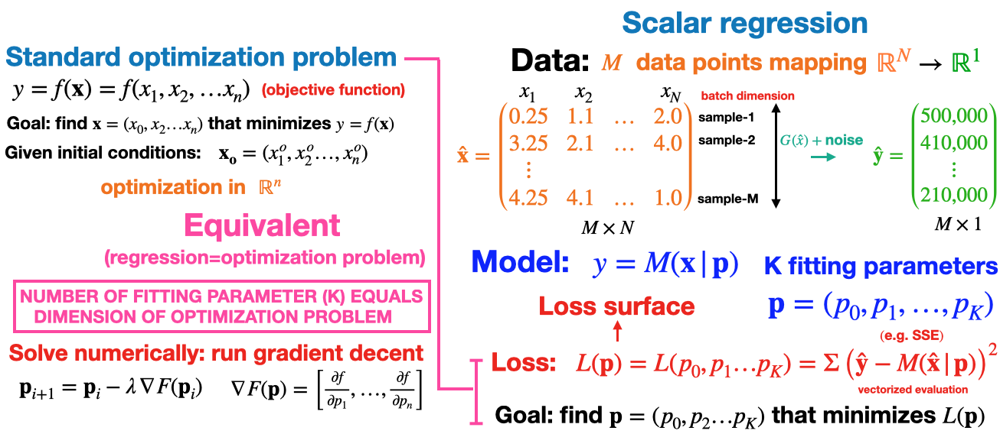
Fitting a curve is minimizing a loss. Same picture, two vocabularies.
Demo: watching a model learn
We have six components. Let’s watch them run, with no framework at all, just NumPy.
The model is a decaying oscillation with exactly two parameters:
\[M(x \mid A, k) = A\,e^{-kx}\sin(2x)\]
Two parameters means we can plot the entire loss surface and watch the optimizer move across it.
How to watch this
You are not here to learn how to write this code; an agent can write it. You’re here to be able to read it and answer: what is the loss function, and is it the right one?
All six components, in one cell
Source code below for your reference. The one line worth finding is inside loss, the only place the choice of MSE appears.
Code
import numpy as nprng = np.random.default_rng(6600)# ---- Component 1: DATA (noisy measurements of a decaying oscillation)x = np.linspace(0, 10, 120)A_true, k_true =3.0, 0.35y = A_true * np.exp(-k_true * x) * np.sin(2.0* x) + rng.normal(0, 0.18, x.size)# ---- Component 2: MODEL (two parameters, so the cost surface is plottable)def model(x, A, k):return A * np.exp(-k * x) * np.sin(2.0* x)# ---- Components 3 & 4: RESIDUALS -> ONE SCALAR (mean over every example)def loss(A, k):return np.mean((y - model(x, A, k)) **2) # <- this is MSE# ---- Component 6: OPTIMIZER (plain gradient descent, numeric gradient)def grad(A, k, h=1e-5):return ((loss(A + h, k) - loss(A - h, k)) / (2* h), (loss(A, k + h) - loss(A, k - h)) / (2* h))A, k, lr =0.35, 1.05, 0.06# a deliberately bad starting guesspath = [(A, k, loss(A, k))]for _ inrange(1500): gA, gk = grad(A, k) A -= lr * gA k -= lr * gk path.append((A, k, loss(A, k)))path = np.array(path)print(f"start loss {path[0, 2]:.4f}")print(f"final loss {path[-1, 2]:.4f}")print(f"recovered A={path[-1, 0]:.2f}, k={path[-1, 1]:.2f} (true: A={A_true}, k={k_true})")
start loss 0.6082
final loss 0.0356
recovered A=2.96, k=0.33 (true: A=3.0, k=0.35)
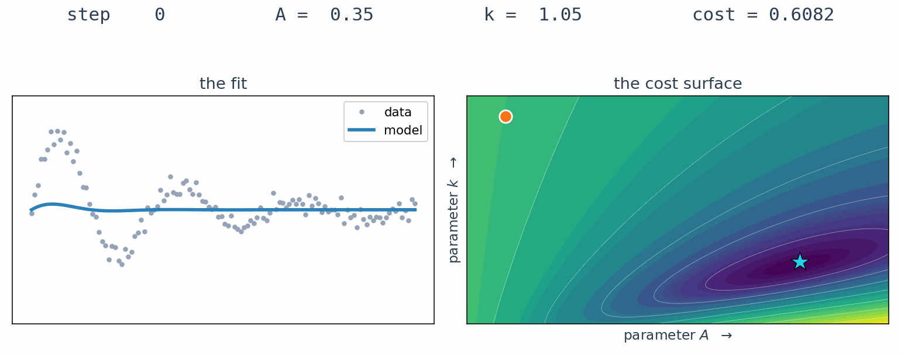
The curve snapping onto the data and the dot rolling downhill are the same event, drawn two ways. Watch the parameter values at the top.
What just happened
Walk it back through the six components:
1. Data
120 noisy \((x, y)\) points
2. Model
\(A e^{-kx}\sin(2x)\): two parameters
3. Residuals
\(y - \hat{y}\) at every point
4. Loss
squared error per point, averaged into one number
5. Splits
(skipped here; we’ll need it the moment the model is flexible)
6. Optimizer
gradient descent, 1500 steps
The punchline
Nothing structural changes when the model becomes a neural network. The model function just gets bigger: thousands or billions of parameters instead of two.
The loss surface stops being something you can draw. The six components stay exactly the same.
And this is why Week 4 exists
The last surface had one obvious valley. Real ones are not so polite. Same setup, but now we fit the frequency instead of the decay: the surface grows ridges and a wide flat region where the amplitude collapses toward zero.
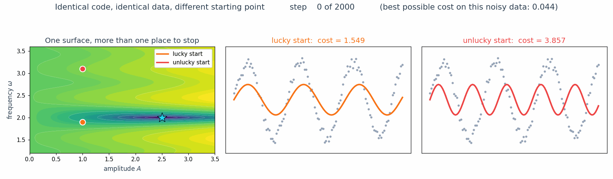
Identical code, identical data, two different starting points.
The lesson from that plot
Where you start matters. Initialization is a real decision, not a detail.
A converged model is not a correct model. The unlucky run finished. It stopped moving. Its loss stopped improving. It is still wrong.
Nothing in the code told you which run was which. You had to look.
This is the same shape as the story about the green tests: the process completed successfully and the result was garbage.
Weeks 4 and onward are largely about stacking the deck so this happens less often: better optimizers, better initialization, normalization, schedules.
So what is a neural network?
We now have the six components
Time to collect on the promise from the deep learning slide: a neural network is a parametric model, exactly like linear regression
This is an artificial neuron, which is a logistic regression you already know.
So what makes it a neural network?
Two moves. That’s the entire idea.
1. Stack them
Take many of these units and arrange them in layers, feeding left to right.
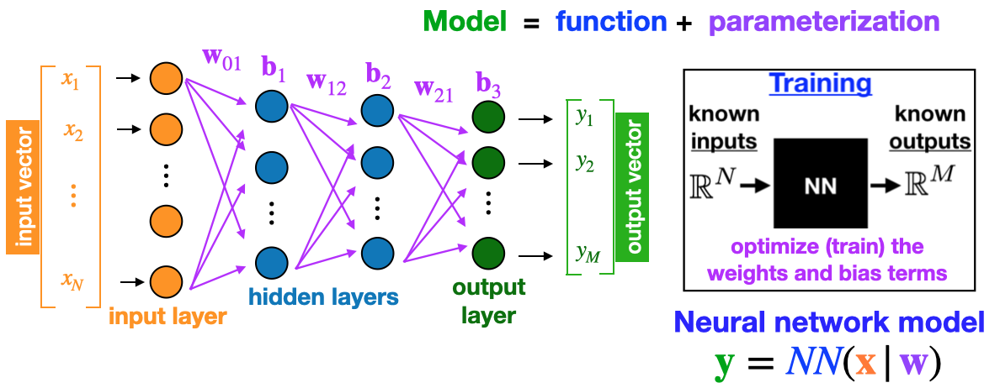
2. Put a nonlinearity between the layers
Without it, stacked linear layers collapse back into one linear layer and you have gained nothing.
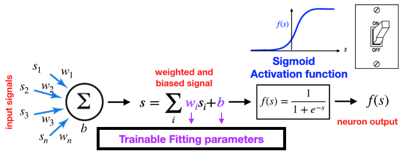
Stack, and add a nonlinearity. Everything else this semester is a clever variation on those two moves: CNNs, transformers, diffusion models.
Why stacking helps
Neural networks are universal function approximators: with enough units, they can approximate essentially any continuous function.
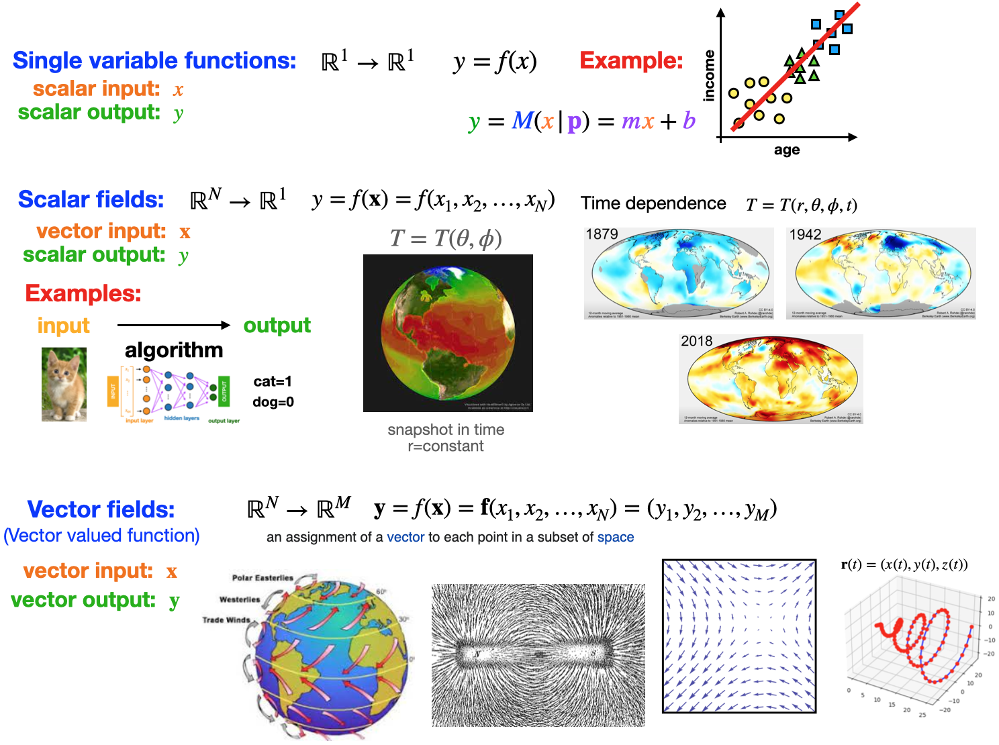
That is why one family of models covers the entire problem taxonomy from earlier: scalar regression, vector regression, binary and multi-class classification, generation.
Before you go
Lab 1: out today
Quiz 1: next week, and here’s exactly what’s on it
A catch-up path, if today moved fast
Lab 1: the six components, by hand
Released today. Due Wednesday Sep 2, 11:59 PM ET.
Everything from today, in NumPy: splits, MSE, BCE, gradient descent, underfitting, overfitting. No PyTorch yet; that’s Week 3.
Work together if you like. Compare results, help each other debug.
Submit the rendered HTML or PDF, with figures embedded.
Solutions go up after the deadline, so you can check yourself.
Expect it to take longer than later labs. That’s normal for the first one.
How labs are graded
The notebook is graded for completion. The understanding is graded on the quiz.
The notebook
Run it, submit it, get the points
Agents allowed, with disclosure
We are not grading your code style
The quiz
Two or three questions on what the lab showed you
Closed-book, no notes, no AI
Formulas are provided; bring a calculator
So collaborate freely. You each still have to understand it on your own on Thursday.
Why it works this way
An agent can write this code in a minute, so grading the code grades the agent. It cannot take the quiz for you.
Quiz 1 study guide
Thursday Sep 3, end of class. ~12 minutes. Covers today’s lecture and Lab 1. Closed-book: no notes, no AI. A formula sheet is handed out with it, so nothing needs memorizing; choosing the right formula is still on you.
The six components: name them, and say what each one does
Metrics vs loss: the difference, and why they’re often different functions
MSE vs BCE: which problem each belongs to, and why BCE punishes confident wrong answers
Train / validation / test: what each is for, and what overfitting looks like on a loss curve
Gradients: what a partial derivative tells you, what the gradient is, what condition holds at a minimum
Gradient descent: the update rule, and what the learning rate controls
The problem types: scalar regression, vector regression, binary and multi-class classification, and their input→output mappings
The hinge: why linear and logistic regression are one-neuron networks, and the two moves that turn them into a neural network
From Lab 1: what training loss did versus validation loss as polynomial degree rose, why the largest learning rate diverged, and why no model could beat the noise floor
If today moved fast, here is your path
These are optional. No graded work assumes you watched them. They’re on the centralized lecture content site, and they exist precisely because this cohort arrives from very different starting points.
All of the above live on Prof. Hickman’s centralized lecture content site, which has a great deal more than this.
Wrap-up
Three things to take with you
Every model is the same six components: data, model, residuals, loss, splits, optimizer. Transformers included.
Training is minimizing a loss by walking downhill. Everything else is doing that well.
A neural network is stacked regressions with nonlinearities between them. Most of the underlying math is already familiar to you.
And one habit: a process that completes successfully is not the same as a result that is correct. Check the output, even when nothing reported an error.
Next week
How neural networks actually work: MLPs, activation functions, depth vs width, and the forward pass.
Before Thursday: Lab 1 (due Wed), find a project partner, and sign up for a Spotlight slot.